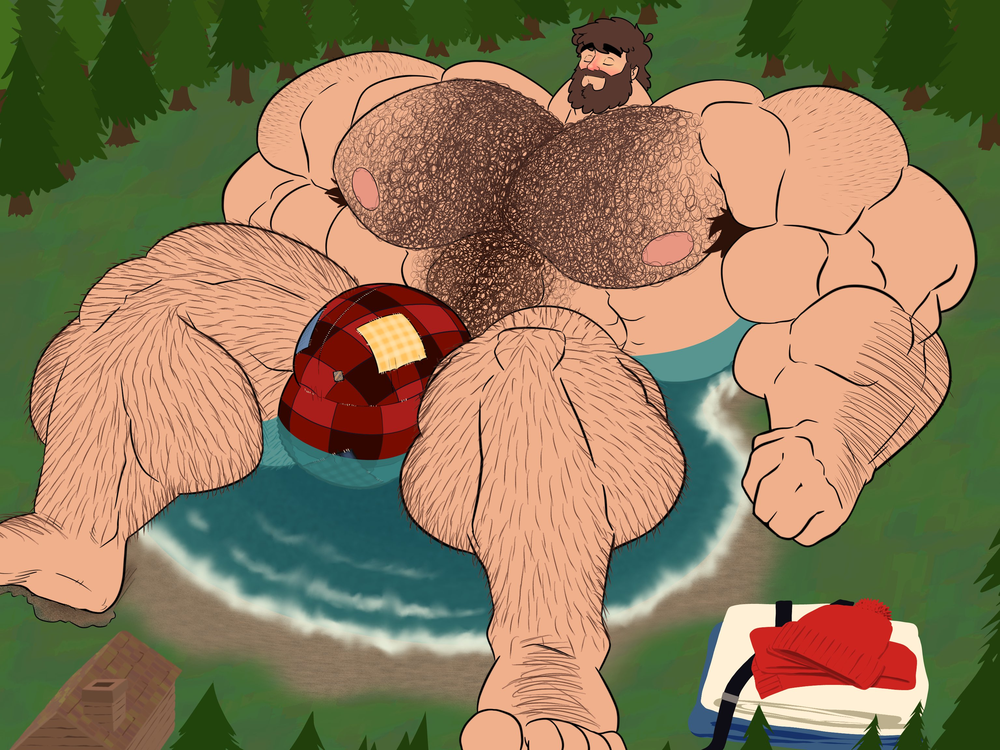

FORM. / FIELD STUDIES
← Athlete LabScale encounter / 02
The Basin
A close witness makes the scale legible. Explore the figure, the observer, and the landscape that holds them together.
VISUAL FIELD NOTE / 01—03

User supplied illustration / scene 02
Scene traces
0 observationsChoose a hotspot and save an observation. The scene will keep your notes on this device.